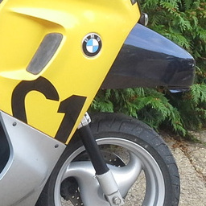

They don’t make them like that any more: the BMW C1

BMW’s C1 was among the most innovative motor vehicles ever produced, and one of the Company’s biggest commercial failures. Many people, I guess, have never even seen a C1, much less had the pleasure of driving one. In this article I’ll explain what made the C1 special, and speculate on why it failed.
BMW released the C1, with considerable fanfare, in the year 2000. Superficially, and legally, it was a motorcycle, but in many ways it handled more like a car. I’m sure BMW positioned the C1 as an alternative to a car, rather than as a bike or scooter. It was sold by BMW car dealers, not alongside the Company’s motorcycle range.
There were two C1 models, and I owned one of each. The smaller model had a 125cc engine, so anybody over the age of 17 could ride it with only one day’s training. If you already had a licence to drive a car, you didn’t need any additional paperwork. The larger C1 was advertised as “200cc” but, in fact, the engine capacity was only about 180cc. Still, you needed a full motorcycle licence to drive this model. The “200” was much faster than its smaller counterpart and, more importantly, smooth-running at highway speeds. If you were brave, you could even tackle motorways in it – but this was never an agreeable experience. The C1 was really an urban vehicle.
There were, and are, many models of motorcycle. There are also motorcycles with roof canopies: the C1 wasn’t an innovation in that respect. What made the C1 unique was that its roof was continuous with its frame, making up a continuous, steel roll cage. BMW designed the C1 to be ridden without protective clothing. They even released a video recording of somebody driving one into a brick wall, and walking away unscathed. As well as the roll cage, there were huge side bumpers, in case the vehicle fell over in a crash. These were useful when it fell over spontaneously, too – more on that later.
In the days when I wore a business suit to work, I could drive my C1 to the office in my working clothes: no leathers, no crash helmet. Outside of work, I could even drive it, with reasonable safety, in jeans and T-shirt. Of course, some people ride an ordinary motorcycle in such clothing, and that’s fine: we need more organ donors. Being able to travel safely in lightweight clothing was a big deal, when stuck in traffic on a sunny day. I could wear exactly the same clothing in a rainstorm, and stay dry.
The C1 was inexpensive to run – not as cheap as a regular motorcycle of the same engine size, but hugely more economical than a car. It wasn’t as manoeuvrable as a regular motorcycle but, again, it was much more nimble than a car. In London, I could thread a C1 through the gaps between the stationary lanes of rush-hour traffic. I could also park it in motorcycle bays or, if all else failed, on the pedestrian pavement. It’s near-impossible to park a car in the City of London, but parking a motorcycle is nearly always possible.
There simply was no better way to travel around a city than on a C1. It was fun, economical, hassle-free, safe, rainproof, easy to park, and quick. In short, I loved my C1s, and I was devastated when BMW announced that they were discontinuing production after only two years.
How could such a thing happen? The C1 appeared to be a success – when I used mine to commute in London, I would see plenty of other C1s. It’s not as if people weren’t buying them; but, clearly, not in sufficient numbers. What went wrong?
I think BMW’s biggest mistake was to underestimate people’s inherent conservatism. Buying and running a motor vehicle is a big commitment – people are likely to stick with what they know. Although BMW sold the C1 as an alternative to a car, my experience was that most owners had experience with motorcycles. If you’ve never ridden a motorcycle, I imagine the C1 would have been a bit daunting. It was daunting, in some ways, even for experienced motorcyclists.
This conservatism extended itself to motorcycle dealers and mechanics. The only place you could buy a new C1 was from a BMW car dealership. Regular motorcycle dealers occasionally had a used one, but they didn’t really know what to do with it. They didn’t want to service C1s, that’s for sure. You can buy a motorcycle from Honda or Yamaha, and take it to a Suzuki garage for routine servicing. The only time I took my C1 to a regular motorcycle garage for servicing, the mechanic said “That was fun. Please don’t come again.” So, for servicing, I had to take my C1s to a BMW car dealer, of which there were only a handful in London. This was a major inconvenience.
It’s also possible that BMW advertised the C1 to the wrong crowd. All their advertising showed glamorous twenty-somethings shuttling between designer clothes outlets and coffee shops. The typical C1 owner was always going to be a sensible parent with a day-job. Car advertisers have kind-of figured this out now: showing a young couple engaged in intimate relations on a car hood doesn’t really sell family saloons. BMW must have known what its target market had to be, but its advertisers didn’t reach those people.
It also has to be admitted that the C1 was weird, and ugly. Our society has a low tolerance for weird, ugly things, whatever advantages they seem to possess.
Although it pains me to say it, I have to admit that the C1 wasn’t perfect. The roof was a wind-trap, especially on open roads, and particularly in side winds. A sudden gust of wind could see the C1 thrown across three lanes of a highway. In fact, strong winds could blow the C1 over even when standing still – it was pretty top-heavy. I had some terrifying experiences, driving the C1 in gales.
It was heavy, too, compared to a traditional motorcycle. If it did blow over, even though it didn’t seem to do the C1 any harm, it was horrible to right it again single-handedly. The extra weight didn’t help with acceleration, either. The C1 was faster away from traffic lights than almost any car, despite its meagre engine, but even a 50cc scooter would leave it standing. The 200cc version would cruise at 60-70 mph, but it would take a while to get there.
Another enemy of the C1 was Britain’s hidebound legal system. Although the C1 was safe – as safe as a car – to ride without protective clothing, it was nevertheless treated as a motorcycle for legal purposes. That meant you were supposed to wear a crash helmet, even though doing so probably reduced the safety, as your torso was firmly strapped into the roll cage. To their credit, the police in my region never complained when I drove my C1 without a helmet, although they often stopped me out of interest.
The C1 wasn’t cheap to buy. It was cheaper than a BMW car, but expensive for a motorcycle. Sadly, people don’t seem to be willing to pay for extra safety. If you don’t care about safety, a regular motorcycle offers many advantages over a C1: an ordinary motorcycle will be cheaper to buy and run, easier to handle, and you can buy one anywhere. These are compelling advantages, if you don’t have much money.
In practice, I almost never saw a C1 outside London. Not surprising, perhaps, because travelling in London is a soul-crushing experience. Public transport is expensive and lamentably awful, and private cars are stationary most of the time. Bicycle and motorcycle still represent the only remotely tolerable means of transport, and both require nerves of steel. Plenty of people live and work in London, but perhaps not enough to support a novel car-motorcycle industry. Transport in other UK cities is awful, but perhaps not yet awful enough to make people consider novel transport options.
So that was the C1: a practical, cost-effective means of urban transport, that few had the good sense to buy. Nothing like it has been produced since, and perhaps nothing will again.
Unless…
The transport situation in Britain’s cities gets worse and worse and, to compound the problem, the Government is keen to get rid of the polluting internal combustion engine. If we’re all going to have to switch over to electric vehicles, perhaps that will give us the incentive to switch over to completely new kinds of vehicle? I’ve heard rumours that BMW is considering producing an electric motorcycle of similar design to the C1. If this ever happens, I’ll be first in line to get one.
If I can afford it.